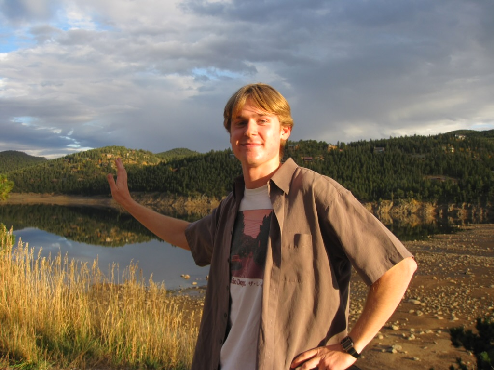

Connor
Julson
Computer Scientist turned future lawyer. Senior at CU Boulder, heading to Colorado Law this fall.
View Resume Explore Work
[ Your photo here ]Analytical thinker.
Community-driven problem solver.
Hey there — my name is Connor Julson and I am a senior in Computer Science at CU Boulder. I'm graduating with my Bachelor's in Computer Science this May and afterwards I'm proceeding onto law school at Colorado Law starting this fall. At law school I'd like to study criminal law and pursue a career as a local prosecutor after graduation.
When I started my undergraduate degree in Computer Science I was intent on seeking a career in Cybersecurity, but as I went further down that career path, I realized I needed something else to motivate me. As a computer science student, I enjoyed solving complex problems and thinking analytically, but I found myself wanting work that was more directly connected to people and the real-world impact of those problems. That realization is what ultimately pushed me toward law.
I'm very much looking forward to applying the skills I've developed in computer science in a way that can make a meaningful impact on my community. This summer, I'll be returning to my hometown to intern at the District Attorney's office, where I'll get my first real experience working in the legal field. It's an exciting opportunity to start learning how the justice system operates and to see firsthand the work that goes into building a case.
As I approach graduation, I'm preparing to begin a completely new chapter. Starting law school feels a bit like starting over, but I'm excited for the challenge. While the transition is a little nerve-wracking, I'm eager to keep learning and to begin working toward a career in public service.
In this portfolio you'll find an archive of my experiences and accomplishments — from my leadership roles and volunteer work to my professional internships and technical projects. I hope it gives you a clear picture of who I am and what I bring to the table.
- Résumé & credentials
- Leadership & volunteer highlights
- Academic & professional experience
- Social & professional profiles